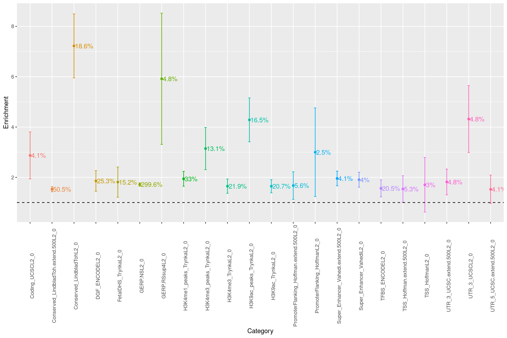
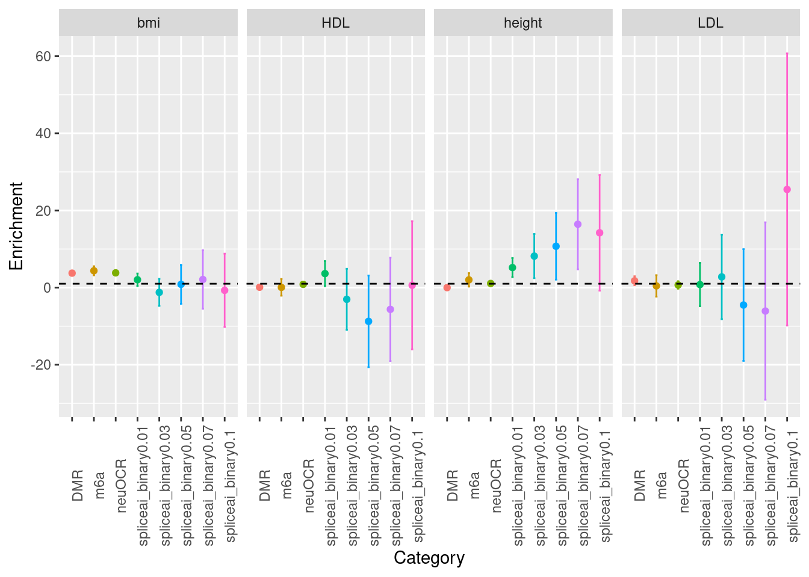

Post-transcriptional regulation
Last updated: 2022-06-15
Checks: 6 1
Knit directory: funcFinemapping/
This reproducible R Markdown analysis was created with workflowr (version 1.6.2). The Checks tab describes the reproducibility checks that were applied when the results were created. The Past versions tab lists the development history.
The R Markdown is untracked by Git. To know which version of the R Markdown file created these results, you'll want to first commit it to the Git repo. If you're still working on the analysis, you can ignore this warning. When you're finished, you can run wflow_publish to commit the R Markdown file and build the HTML.
Great job! The global environment was empty. Objects defined in the global environment can affect the analysis in your R Markdown file in unknown ways. For reproduciblity it's best to always run the code in an empty environment.
The command set.seed(20210404) was run prior to running the code in the R Markdown file. Setting a seed ensures that any results that rely on randomness, e.g. subsampling or permutations, are reproducible.
Great job! Recording the operating system, R version, and package versions is critical for reproducibility.
Nice! There were no cached chunks for this analysis, so you can be confident that you successfully produced the results during this run.
Great job! Using relative paths to the files within your workflowr project makes it easier to run your code on other machines.
Great! You are using Git for version control. Tracking code development and connecting the code version to the results is critical for reproducibility.
The results in this page were generated with repository version 8c82e64. See the Past versions tab to see a history of the changes made to the R Markdown and HTML files.
Note that you need to be careful to ensure that all relevant files for the analysis have been committed to Git prior to generating the results (you can use wflow_publish or wflow_git_commit). workflowr only checks the R Markdown file, but you know if there are other scripts or data files that it depends on. Below is the status of the Git repository when the results were generated:
Ignored files:
Ignored: .ipynb_checkpoints/
Ignored: analysis/build_annotations_for_single_cell_data.nb.html
Ignored: analysis/lab4_prepare.nb.html
Ignored: analysis/ldsc_results.nb.html
Ignored: analysis/learn_archR.nb.html
Ignored: analysis/mtsplice_finemapping_results.nb.html
Ignored: analysis/results.nb.html
Ignored: analysis/snp_finemapping_results.nb.html
Ignored: analysis/splicing.nb.html
Ignored: analysis/susie_tutorial.nb.html
Untracked files:
Untracked: SNPs_categories,png
Untracked: SNPs_categories.png
Untracked: analysis/.ipynb_checkpoints/
Untracked: analysis/asthma_bkg.Rmd
Untracked: analysis/asthma_prelim_results_archive.Rmd
Untracked: analysis/asthma_prelim_results_cp.Rmd
Untracked: analysis/asthma_results_cp.Rmd
Untracked: analysis/build_annotations_for_single_cell_data.Rmd
Untracked: analysis/enhancer_gene_feature.Rmd
Untracked: analysis/feedback.Rmd
Untracked: analysis/gene_finemapping_results.Rmd
Untracked: analysis/lab4.Rmd
Untracked: analysis/lab4_prepare.Rmd
Untracked: analysis/ldsc_PTR_results.Rmd
Untracked: analysis/learn_archR.Rmd
Untracked: analysis/learn_susie.Rmd
Untracked: analysis/mtsplice_finemapping_results.Rmd
Untracked: analysis/notes.Rmd
Untracked: analysis/splicing.Rmd
Untracked: analysis/susie_tutorial.Rmd
Untracked: bmi_locus1410.pdf
Untracked: code/.ipynb_checkpoints/
Untracked: code/.snakemake/
Untracked: code/Euro_LD_Chunks.RData
Untracked: code/Snakefile
Untracked: code/config.yaml
Untracked: code/environment.yml
Untracked: code/ldsc.log
Untracked: code/ldsc.results
Untracked: code/ldsc_regression.sh
Untracked: code/make_plots.R
Untracked: code/run_ldsc.sh
Untracked: code/run_ldsc_with_bed.sh
Untracked: code/run_ldsc_with_bed_v2.sh
Untracked: code/run_susie.R
Untracked: code/run_torus.sh
Untracked: code/sctype/
Untracked: code/slurm-20815237.out
Untracked: code/slurm-20832976.out
Untracked: code/slurm-20832977.out
Untracked: code/slurm-20832978.out
Untracked: code/slurm-20832979.out
Untracked: code/slurm-20832980.out
Untracked: code/split_vcf.sh
Untracked: code_backup/
Untracked: data/ScTypeDB_full.xlsx
Untracked: data/hg19_gtf_genomic_annots_ver2.gr.rds
Untracked: data/num_overlaps_finemapped_SNPs_and_ctcf.txt
Untracked: data/torus_enrichment_novel_annot.est
Untracked: data/torus_joint_enrichment.est
Untracked: data/torus_joint_refined_enrichment.est
Untracked: enhancer_gene_feature.rmd
Untracked: fig1_panels.pdf
Untracked: fig2.pdf
Untracked: fig_panel2.pdf
Untracked: gene_mapping.pdf
Untracked: output/AAD/GMP_merge_stats.txt
Untracked: output/AAD/Wang2020_joint.results
Untracked: output/AAD/Wang2020_joint_T.results
Untracked: output/AAD/Wang2020_joint_tissueResT.results
Untracked: output/AAD/allergy/Ulirsch2019/GMP_merge_compare_old.est
Untracked: output/AAD/allergy/Ulirsch2019_disjoint_snps.sumstats
Untracked: output/AAD/allergy/Wang2020_T_subsets.est
Untracked: output/AAD/allergy/Wang2020_T_subsets_indiv.est
Untracked: output/AAD/allergy/Wang2020_T_tissueRes.est
Untracked: output/AAD/allergy/Wang2020_joint_T.results
Untracked: output/AAD/allergy/Wang2020_joint_tissueResT.results
Untracked: output/AAD/allergy/Wang2020_tissueResT.est
Untracked: output/AAD/allergy/torus_enrichment_CD4.est
Untracked: output/AAD/allergy/torus_enrichment_CD8.est
Untracked: output/AAD/allergy/torus_enrichment_non_tissueRes_T.est
Untracked: output/AAD/allergy/torus_enrichment_tissueMigraT.est
Untracked: output/AAD/allergy/torus_enrichment_tissueResT_C6.est
Untracked: output/AAD/allergy/torus_enrichment_tissueResT_C8.est
Untracked: output/AAD/allergy/torus_enrichment_tissueRes_T.est
Untracked: output/AAD/allergy/torus_enrichment_tissueResident_T_cells.est
Untracked: output/AAD/asthma_adult/Ulirsch2019/CD4_compare_old.est
Untracked: output/AAD/asthma_adult/Ulirsch2019/CD8_compare_old.est
Untracked: output/AAD/asthma_adult/Ulirsch2019/GMP_merge_compare_old.est
Untracked: output/AAD/asthma_adult/Wang2020_T_subsets.est
Untracked: output/AAD/asthma_adult/Wang2020_T_subsets_indiv.est
Untracked: output/AAD/asthma_adult/Wang2020_T_tissueRes.est
Untracked: output/AAD/asthma_adult/Wang2020_joint_T.results
Untracked: output/AAD/asthma_adult/Wang2020_joint_tissueResT.results
Untracked: output/AAD/asthma_adult/torus_enrichment_CD4.est
Untracked: output/AAD/asthma_adult/torus_enrichment_CD8.est
Untracked: output/AAD/asthma_adult/torus_enrichment_non_tissueRes_T.est
Untracked: output/AAD/asthma_adult/torus_enrichment_tissueMigraT.est
Untracked: output/AAD/asthma_adult/torus_enrichment_tissueResT_C6.est
Untracked: output/AAD/asthma_adult/torus_enrichment_tissueResT_C8.est
Untracked: output/AAD/asthma_adult/torus_enrichment_tissueRes_T.est
Untracked: output/AAD/asthma_adult/torus_enrichment_tissueResident_T_cells.est
Untracked: output/AAD/asthma_child/CD4_compare.est
Untracked: output/AAD/asthma_child/CD8_compare.est
Untracked: output/AAD/asthma_child/Ulirsch2019/GMP_merge_compare_old.est
Untracked: output/AAD/asthma_child/Ulirsch2019/torus_enrichment_CD4.est
Untracked: output/AAD/asthma_child/Ulirsch2019/torus_enrichment_CD8.est
Untracked: output/AAD/asthma_child/Wang2020_T_subsets.est
Untracked: output/AAD/asthma_child/Wang2020_T_subsets_indiv.est
Untracked: output/AAD/asthma_child/Wang2020_T_tissueRes.est
Untracked: output/AAD/asthma_child/Wang2020_joint_T.results
Untracked: output/AAD/asthma_child/Wang2020_joint_tissueResT.results
Untracked: output/AAD/asthma_child/torus_enrichment_CD4.est
Untracked: output/AAD/asthma_child/torus_enrichment_CD8.est
Untracked: output/AAD/asthma_child/torus_enrichment_non_tissueRes_T.est
Untracked: output/AAD/asthma_child/torus_enrichment_tissueMigraT.est
Untracked: output/AAD/asthma_child/torus_enrichment_tissueResT_C6.est
Untracked: output/AAD/asthma_child/torus_enrichment_tissueResT_C8.est
Untracked: output/AAD/asthma_child/torus_enrichment_tissueRes_T.est
Untracked: output/AAD/asthma_child/torus_enrichment_tissueResident_T_cells.est
Untracked: output/LDL_ukb_L10.gif
Untracked: output/LDL_ukb_L10.pdf
Untracked: output/background_SNPs_annotated_percent.txt
Untracked: output/locus_1452.gif
Untracked: output/locus_1452.pdf
Untracked: output/splicing/PTR_across_traits_annotations.results
Untracked: output/splicing/scz_PTR_annotations.results
Untracked: output/splicing/scz_neuOCR_m6a_DMR.results
Untracked: output/splicing/scz_spliceAI0.03_hist.png
Untracked: output/splicing/scz_spliceAI0.03_scatterplot.png
Untracked: output/splicing/scz_spliceai_binary0.03.results
Untracked: output/splicing/torus_enrichment_joint_scz_mtsplice0.6_hypothalamus-brain.est
Untracked: output/splicing/torus_enrichment_joint_scz_spliceAI.est
Untracked: panel_figure2.pdf
Untracked: test.txt
Unstaged changes:
Deleted: .Rprofile
Modified: analysis/asthma_prelim_results.Rmd
Modified: analysis/asthma_results.Rmd
Modified: analysis/enrichment_analysis.Rmd
Modified: analysis/ldsc_results.Rmd
Modified: analysis/snp_finemapping_results.Rmd
Deleted: output/AAD/Caldero2019_disjoint_snps.sumstats
Modified: output/AAD/allergy/Caldero2019_disjoint_snps.sumstats
Modified: output/AAD/allergy/Ulirsch2019/GMP_merge_compare.est
Modified: output/AAD/allergy/Wang2020_indiv.est
Modified: output/AAD/allergy/Wang2020_joint.results
Deleted: output/AAD/asthma/Caldero2019_diffDA_annot_percent.txt
Deleted: output/AAD/asthma/Caldero2019_stimuDA_annot_percent.txt
Deleted: output/AAD/asthma/celltype_specific_adult_lungs_torus.est
Deleted: output/AAD/asthma/diffe_adult_blood_torus.est
Deleted: output/AAD/asthma/joint_blood_immune_rest_vs_stimu.est
Deleted: output/AAD/asthma/joint_lung_vs_blood_immune_diff_torus.est
Deleted: output/AAD/asthma/joint_lung_vs_blood_immune_stimu_torus.est
Deleted: output/AAD/asthma/lung_clusters_dict.txt
Deleted: output/AAD/asthma/lung_clusters_info.txt
Deleted: output/AAD/asthma/stimu_adult_blood_torus.est
Deleted: output/AAD/asthma/torus_enrichment_all_rest.est
Deleted: output/AAD/asthma/torus_enrichment_all_stimulated.est
Deleted: output/AAD/asthma/zhang2021_annot_percent.txt
Deleted: output/AAD/asthma/zhang2021_cell_type_overlaps.txt
Deleted: output/AAD/asthma/zhang2021_peaks_per_celltype.txt
Modified: output/AAD/asthma_adult/Ulirsch2019/CD4_compare.est
Modified: output/AAD/asthma_adult/Ulirsch2019/CD8_compare.est
Deleted: output/AAD/asthma_adult/Ulirsch2019/GMP_merge_compare.est
Modified: output/AAD/asthma_adult/Wang2020_indiv.est
Modified: output/AAD/asthma_adult/Wang2020_joint.results
Modified: output/AAD/asthma_child/Ulirsch2019/GMP_merge_compare.est
Modified: output/AAD/asthma_child/Wang2020_indiv.est
Modified: output/AAD/asthma_child/Wang2020_joint.results
Deleted: output/asthma/Caldero2019_diffDA_annot_percent.txt
Deleted: output/asthma/Caldero2019_stimuDA_annot_percent.txt
Deleted: output/asthma/celltype_specific_adult_lungs_torus.est
Deleted: output/asthma/diffe_adult_blood_torus.est
Deleted: output/asthma/joint_lung_vs_blood_immune_diff_torus.est
Deleted: output/asthma/joint_lung_vs_blood_immune_stimu_torus.est
Deleted: output/asthma/lung_clusters_dict.txt
Deleted: output/asthma/lung_clusters_info.txt
Deleted: output/asthma/stimu_adult_blood_torus.est
Deleted: output/asthma/zhang2021_annot_percent.txt
Deleted: output/asthma/zhang2021_cell_type_overlaps.txt
Deleted: output/asthma/zhang2021_peaks_per_celltype.txt
Note that any generated files, e.g. HTML, png, CSS, etc., are not included in this status report because it is ok for generated content to have uncommitted changes.
These are the previous versions of the repository in which changes were made to the R Markdown (analysis/ldsc_PTR_results.Rmd) and HTML (docs/ldsc_PTR_results.html) files. If you've configured a remote Git repository (see ?wflow_git_remote), click on the hyperlinks in the table below to view the files as they were in that past version.
| File | Version | Author | Date | Message |
|---|---|---|---|---|
| html | 611b343 | Jing Gu | 2022-06-15 | wflow_publish(files = c("analysis/index.Rmd", "docs/ldsc_PTR_results.html")) |
Assessing the utility of novel annotations
In this analysis, we aim to assess how much disease heritability can be explained by post-transcritional regulation processes. GWAS SNPs were first annotated by either functional data or computational predictions. For each annotation category, S-LDSC computed partitioned LD scores using referencel panel and then regressed \(\chi^2\) statistics against them to estimate the coefficient \(\hat\tau\) per category. This estimate would be further used to compute heritability.
Several post-transcriptonal features will be explored:
- alternative splicing
- RNA modification: m6A
- RNA binding
- Polyadenylation
Method(S-LDSC)
Technical details:
HapMap3 SNPs (~1.2M): used as a proxy for well imputed SNPs and the regression SNPs in LDSC. They were generated by the international HapMap project on a collection of 1301 samples from a variaty of human populations.[https://www.sanger.ac.uk/resources/downloads/human/hapmap3.html]
Reference panel SNPs (~9M): the set of 1000G SNPs with MAF > 5% in ~500 Euproean samples
LDSC inputs/outputs:
.M/.l2.M_5_50: The .M file contains the total number of SNPs; the .l2.M_5_50 file contains the number of SNPs with minor allele frequency above 5%. By default, ldsc uses common SNPs (MAF > 5%) to estimate per SNP heritability, which is different for rare variants.
freqfile/w-ld-chr: computed on European of Phase 3 of 1kg Genomes
Regression weights: used to correct for non-independence and heteroskedasticity among the \(\chi^2\) statistics.
Regression coefficients: Quoted from the website that "They measure the additional contribution of one annotation to the model and are interpretable for both binary and continuous annotations"
Outputs
The third column corresponds to the proportion of heritability explained.
Category Prop._SNPs Prop._h2 Prop._h2_std_error Enrichment
1 m6a 0.006208692 0.052966389 0.010838776 8.5310061
2 neuOCR 0.093030734 0.275791186 0.037290677 2.9645169
3 DMR 0.049493563 0.324376410 0.035765978 6.5539110
4 spliceai_binary0.01 0.004887305 -0.002269065 0.009825267 -0.4642773
5 spliceai_binary0.03 0.001713928 -0.005219552 0.007272860 -3.0453734
6 spliceai_binary0.05 0.000992760 -0.005691005 0.006544050 -5.7325086Results
test annotations one at a time
Schizophrenia
baseline model: baselineLD-v1.1 annotations: spidex, spliceai, fetal brain m6a, neuronal OCR, differentially methylated regions in brains (DMR)
Legend:
- x-axis - annotations
- y-axis - fold of enrichment
- label on the plot - percent of narrow-sense heritability
- dashed line - no enrichment

Examine baseline annotations
A list of annotations with >1.5 fold of enrichment were listed. GERP.NS is suspicious as both proportion of SNPs in category and heritability exceeds one. Besides that, we see heritability is mainly explained by conservation and transcriptional regulation.
test annotation:spliceai score >=0.03
f<-read.table("output/splicing/scz_spliceai_binary0.03.results", header = T)
plot_ldsc_enrichment(f[f$Enrichment>=1.5 & f$Enrichment<10 , ], tolabel = TRUE) 
Across multiple traits
baseline model: baselineLD-v1.1
spidex annotations were not included.

test annotations jointly

splicing predictions diagnosis
SCZ
A left-skewed p-value distribution for SNPs with spliceAI >=0.03
p-value distributions for SNPs with spliceAI>=0.03 p-values against spliceAI scores
{kind=link}
{kind=link}
Note: Very few SNPs with high spliceAI scores also have significant p-values.
QQ plot
QQ plots for SCZ GWAS SNPs with spliceAI>=0.03
{kind=link}
Note: There is not much signal in SNPs that have spliceAI scores above threshold.
AFib
QQ plot
QQ plots for aFib GWAS SNPs with spliceAI>=0.03
{kind=link}
sessionInfo()R version 4.0.4 (2021-02-15)
Platform: x86_64-pc-linux-gnu (64-bit)
Running under: Scientific Linux 7.4 (Nitrogen)
Matrix products: default
BLAS/LAPACK: /software/openblas-0.3.13-el7-x86_64/lib/libopenblas_haswellp-r0.3.13.so
locale:
[1] LC_CTYPE=en_US.UTF-8 LC_NUMERIC=C
[3] LC_TIME=en_US.UTF-8 LC_COLLATE=en_US.UTF-8
[5] LC_MONETARY=en_US.UTF-8 LC_MESSAGES=en_US.UTF-8
[7] LC_PAPER=en_US.UTF-8 LC_NAME=C
[9] LC_ADDRESS=C LC_TELEPHONE=C
[11] LC_MEASUREMENT=en_US.UTF-8 LC_IDENTIFICATION=C
attached base packages:
[1] stats graphics grDevices utils datasets methods base
other attached packages:
[1] ggplot2_3.3.3
loaded via a namespace (and not attached):
[1] Rcpp_1.0.8 highr_0.8 pillar_1.5.0 compiler_4.0.4
[5] bslib_0.2.4 later_1.1.0.1 jquerylib_0.1.3 git2r_0.28.0
[9] workflowr_1.6.2 tools_4.0.4 digest_0.6.27 gtable_0.3.0
[13] jsonlite_1.7.2 evaluate_0.14 lifecycle_1.0.0 tibble_3.0.6
[17] pkgconfig_2.0.3 rlang_1.0.1 DBI_1.1.1 cli_3.2.0
[21] rstudioapi_0.13 yaml_2.2.1 xfun_0.21 withr_2.4.3
[25] dplyr_1.0.4 stringr_1.4.0 knitr_1.31 generics_0.1.0
[29] fs_1.5.0 vctrs_0.3.8 sass_0.3.1 tidyselect_1.1.1
[33] rprojroot_2.0.2 grid_4.0.4 glue_1.6.1 R6_2.5.1
[37] fansi_1.0.2 rmarkdown_2.7 farver_2.1.0 purrr_0.3.4
[41] magrittr_2.0.1 whisker_0.4 scales_1.1.1 promises_1.2.0.1
[45] ellipsis_0.3.2 htmltools_0.5.1.1 assertthat_0.2.1 colorspace_2.0-2
[49] httpuv_1.5.5 labeling_0.4.2 utf8_1.2.2 stringi_1.5.3
[53] munsell_0.5.0 crayon_1.4.1